왜 개발자의 말은 설득력이 약할까요
발표자는 20년 넘게 팀 리더와 기술 리더로 일했어요. 그동안 수많은 보고를 했고, 이직하며 실무 면접과 임원 면접을 여러 번 봤어요. 대학원 면접, 기술사 논술 시험과 2차 면접, 석사 논문까지 논리적으로 말하고 써야 하는 자리를 두루 겪었죠. 그 경험에서 정리한 말하기 구조가 이 영상의 주제예요.
첫 화면 아래쪽 파란 버튼들이 이 구조를 쓸 수 있는 자리예요. 임원·팀장 보고, 면접 답변, 기술 발표, 기술사 시험, 논문 작성까지 다섯 가지가 있어요. 맨 아래에는 구조의 이름 W²HO와 네 단계 Why · What · How · Opinion이 적혀 있어요.
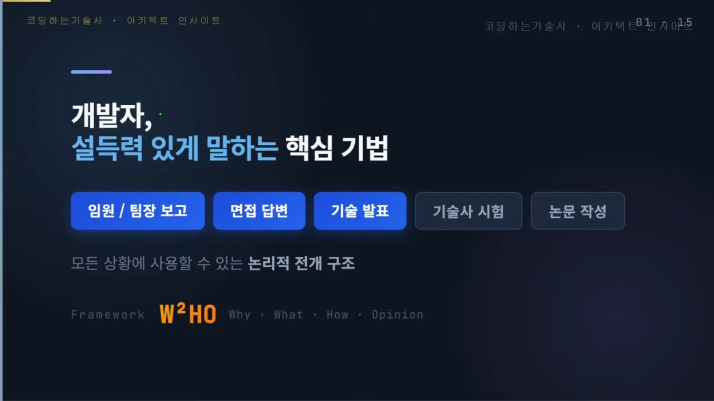
기술은 아는데 설득은 왜 어려울까요
발표자는 10년을 개발하고도 조직의 의사결정에 목소리를 못 내는 이유가 기술 지식이 모자라서가 아니라고 봐요. 아는 것을 논리적인 순서로 꺼내는 훈련을 받은 적이 없어서예요.
슬라이드 오른쪽 빨간 X 카드 세 장이 개발자에게 흔한 실수예요. 첫째는 해결책부터 말하는 거예요. "Redis 캐시 쓰면 됩니다"처럼 왜 필요한지 설명 없이 결론만 던지죠. 둘째는 How만 지나치게 강조하는 거예요. 기술을 잘 알다 보니 구현 방법을 늘어놓게 되는데, 비개발 직군이나 임원은 "그래서 뭘 원하는 건데?"라며 지쳐 버려요. 셋째는 결론과 향후 방향이 없는 거예요. 우리 조직에 어떻게 적용하고 앞으로 어디로 갈지가 빠져 있어요.
W²HO 네 단계
W²HO는 Why → What → How → Opinion 순서로 말을 짜는 틀이에요. 슬라이드는 단계마다 색을 하나씩 정하고, 카드 위에 그 단계에서 답할 질문을 적어 뒀어요. 왜 이것이 문제인가, 무엇이 필요한가, 어떻게 구현하는가, 내 판단은 무엇인가예요.
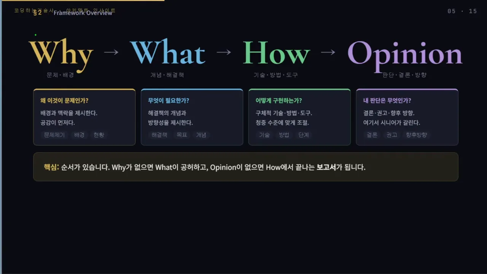
Why — 먼저 필요성을 느끼게 해요
Why를 먼저 꺼내면 듣는 사람이 그 문제를 스스로 떠올려요. "이 문제 나도 겪었는데" 하고 공감이 생긴 상태에서 해결책을 들으면 저항 없이 받아들이죠. 발표자가 '설득이 아니라 공감'이라고 강조하는 이유예요.
오른쪽 카드 네 장이 Why에 담을 수 있는 예시예요. 맨 위는 지금 겪는 고통이에요. 장애가 나면 평균 4시간 서비스가 멈추고, 그때마다 고객 문의가 폭주하고 팀 전체가 멈춘다는 식이죠. 그 밖에 수치로 보여 주는 파급 효과, 클라우드·AI(Artificial Intelligence) 전환 같은 트렌드와 환경 변화, 그리고 기술사 논술에서 쓸 법한 기존 방식의 한계가 있어요. 발표자는 이건 예시일 뿐이고 주제에 따라 얼마든지 달라진다고 덧붙여요.
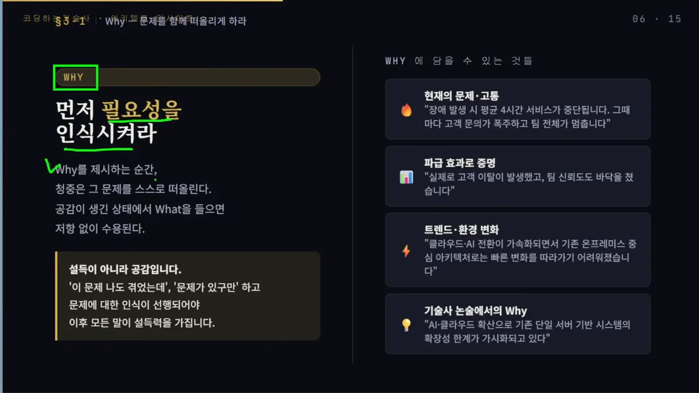
기술사 논술 시험에도 같은 원리가 통한다고 해요. 2·3·4교시 답안은 문제가 따로 요구하지 않는 한 첫 단락을 Why로 여는 게 좋아요. 채점자 입장에서 답안 흐름이 한눈에 잡히기 때문이에요.
What과 How — 개념과 실행을 나눠요
슬라이드 왼쪽 파란 칸이 What, 오른쪽 초록 칸이 How예요. What은 Why에서 만든 공감 위에 '이런 것이 필요하다'는 방향을 놓는 단계예요. 면접이라면 "마이크로서비스 아키텍처로 전환이 필요합니다", 기술사 논술이라면 "DevOps 파이프라인 도입을 통해 해결할 수 있다"까지만 말해요. 구체적인 방법은 아직 꺼내지 않아요.
How는 그 개념을 실현할 기술·도구·단계를 말해요. 오른쪽 면접 예시처럼 도메인 경계를 정하고, API(Application Programming Interface) 게이트웨이를 앞단에 두고, 서비스별 독립 배포 파이프라인을 꾸렸다고 설명하는 단계예요.
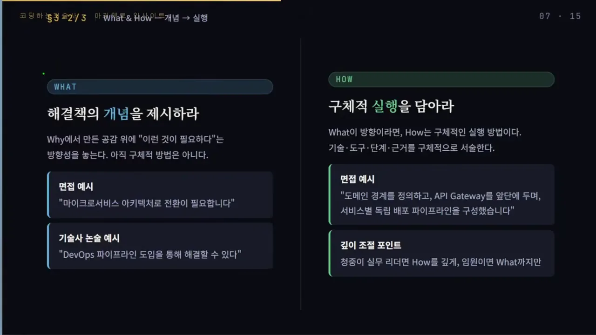
Opinion — 여기서 시니어가 갈려요
슬라이드 왼쪽 제목처럼 How에서 멈추면 단순 보고서가 돼요. 대부분의 개발자가 "이렇게 했습니다"에서 말을 끝내거든요. Opinion이 있어야 '이 사람은 생각하는 사람이구나'라는 인상이 남아요. 발표자는 기술사 답안이나 논문 끝에 늘 나오는 '향후 연구 방향'이 바로 Opinion이라고 설명해요.
오른쪽 카드 네 장이 Opinion의 형태예요. 결론·권고, 트레이드오프 인식, 향후 방향, 교훈·반성이에요. 첫 카드의 권고 예시는 MSA 전환을 권하면서도, 도메인 경계를 충분히 검토하지 않으면 분산 모놀리스가 될 위험이 있으니 첫 6개월은 핵심 도메인 2개만 분리하자고 제안해요.
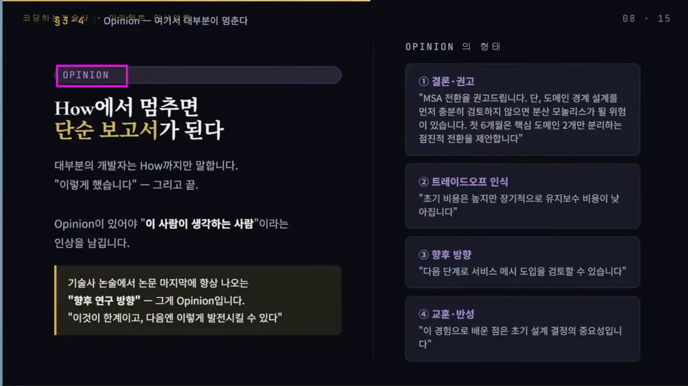
왜 통하고, 누구에게 얼마나 깊게 말할까요
발표자는 이 순서가 통하는 이유를 청중의 머릿속에서 찾아요. 슬라이드의 네 줄이 단계마다 청중이 속으로 하는 말이에요. Why를 들으면 "맞아, 나도 그 문제 겪었어" 하며 공감이 생겨요. What을 들으면 "아, 이걸로 해결하는구나" 하고 저항 없이 받아들여요. How를 들으면 구현 방법을 알게 되어 신뢰가 쌓이고, Opinion을 들으면 전문가라는 인상이 남아요.
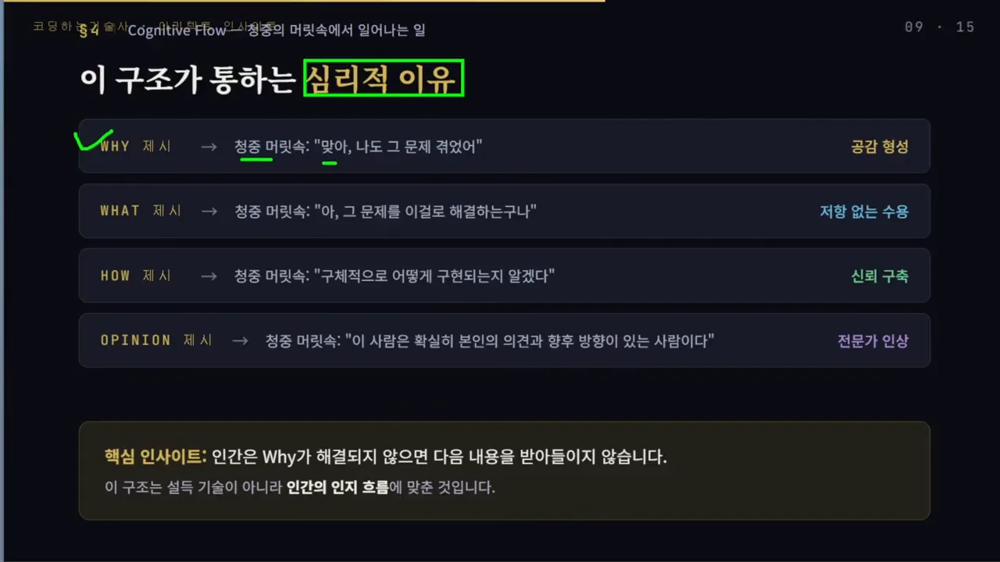
아래 노란 상자의 문장이 이 섹션의 요지예요. 사람은 Why가 풀리지 않으면 다음 내용을 잘 받아들이지 않아요. 그래서 이 구조는 설득 기술이라기보다 사람의 인지 흐름에 맞춘 순서라는 거예요.
청중에 따라 깊이를 바꿔요
구조는 같아도 청중이 누구냐에 따라 단계별 비중이 달라져요. 슬라이드 아래쪽 동그라미 개수가 각 단계를 얼마나 깊게 다룰지를 보여 줘요. 왼쪽 대표이사·임원 카드는 How가 동그라미 하나뿐이고, 오른쪽 팀장·아키텍트·기술 리더 카드는 What과 How가 꽉 차 있어요.
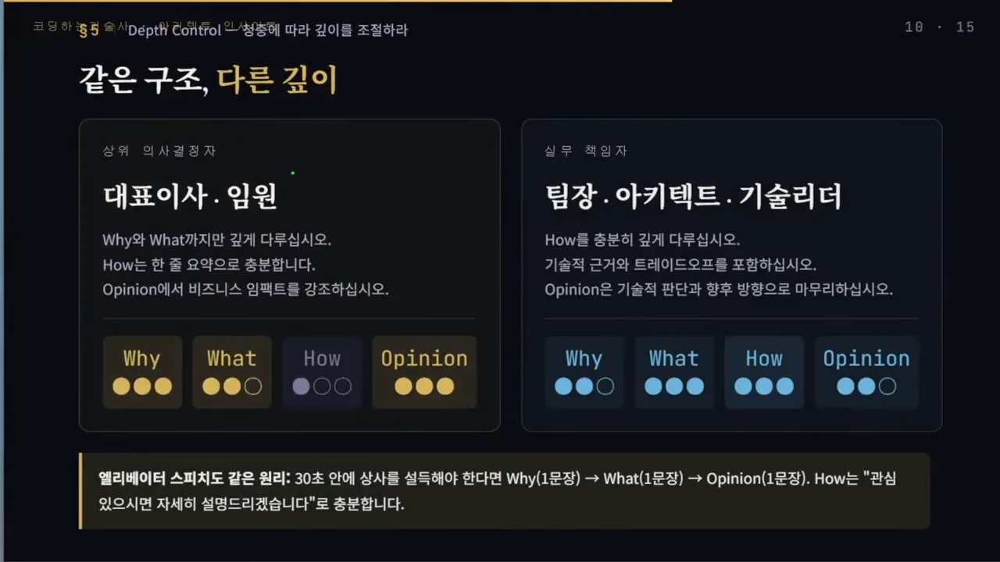
| 청중 | 깊게 | How는 | 이유 |
|---|---|---|---|
| 대표이사·임원 | Why, What, Opinion | 한 줄 요약, 또는 "자세히 설명드릴까요?"로 묻기 | 기술을 어떻게 구현하는지에는 관심이 적을 수 있어요 |
| 팀장·아키텍트·기술 리더 | How | 충분히 깊게, 기술적 근거와 트레이드오프까지 | 구현 방법, 걸리는 시간, 쓸 도구가 관심사예요. Why와 What은 이미 그들이 정해 둔 것일 수도 있어요 |
| 엘리베이터 스피치 | Why, What, Opinion 각 한 문장 | "관심 있으시면 자세히 설명드리겠습니다"로 뒤로 미루기 | 짧은 시간 안에 상사를 설득해야 해요 |
MSA 면접 답변 고쳐 보기
발표자는 면접 질문 하나로 앞의 내용을 직접 보여 줘요. "MSA 경험에 대해 말씀해 보세요"라는 질문에 두 가지로 답해 보는 거예요. 슬라이드 왼쪽 빨간 칸이 구조 없는 답변, 오른쪽 초록 칸이 W²HO로 짠 답변이에요.
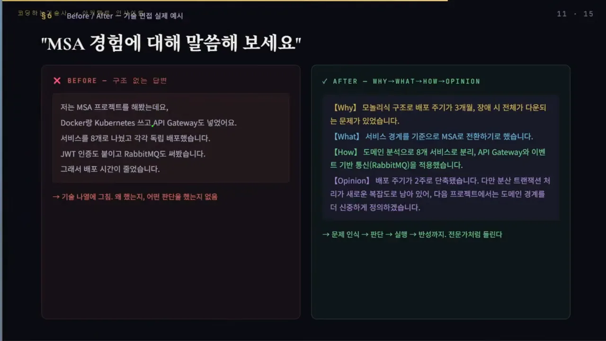
Before 답변은 Docker와 Kubernetes, API 게이트웨이, 서비스 8개 분리, JWT(JSON Web Token) 인증, RabbitMQ를 차례로 늘어놓고 "그래서 배포 시간이 줄었습니다"로 끝나요. 발표자는 What과 How의 경계도 없다고 지적해요. 아래 그림은 두 답변이 네 단계 중 어디를 채우는지 나란히 놓은 거예요.
After 답변은 칸마다 한두 문장이에요. Why에서 모놀리식 구조라 배포 주기가 3개월이고 장애가 나면 전체가 다운됐다는 문제를 꺼내요. What에서 서비스 경계를 기준으로 MSA로 전환하기로 했다고 말해요. How에서 도메인 분석으로 8개 서비스로 나누고 API 게이트웨이와 이벤트 기반 통신(RabbitMQ)을 적용했다고 설명해요. Opinion에서는 배포 주기가 2주로 줄었다는 결과에, 분산 트랜잭션 처리가 새 복잡도로 남아 다음엔 도메인 경계를 더 신중히 정하겠다는 반성을 붙여요.
문제 인식 그리고 판단 실행 반성까지 전문가처럼 들리지 않나요?
— 영상 11:14
어디에 쓰고, 어떻게 연습할까요
발표자는 이 틀을 여러 자리의 기본 골격으로 깔고 응용하라고 권해요. 슬라이드의 여섯 카드가 그 자리들이고, 카드마다 회색 글씨로 네 단계를 그 자리에 맞게 바꿔 부른 이름이 적혀 있어요.
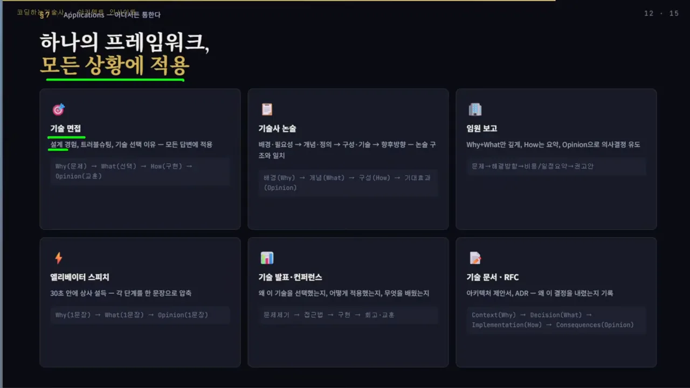
| 자리 | Why | What | How | Opinion |
|---|---|---|---|---|
| 기술 면접 (설계 경험, 트러블슈팅, 기술 선택 이유) | 문제 | 선택 | 구현 | 교훈 |
| 기술사 논술 | 배경·필요성 | 개념·정의 | 구성·기술 | 향후 방향·기대효과 |
| 임원 보고 | 문제 | 해결 방향 | 비용·일정 요약 | 권고안 |
| 엘리베이터 스피치 | 한 문장 | 한 문장 | 뒤로 미룸 | 한 문장 |
| 기술 발표·컨퍼런스 | 문제 제기 | 접근법 | 구현 | 회고·교훈 |
| 기술 문서·RFC(Request for Comments)·ADR(Architecture Decision Record) | Context | Decision | Implementation | Consequences |
스스로 점검할 다섯 가지
왼쪽 체크리스트 다섯 줄을 말하거나 쓴 뒤에 하나씩 확인해 보면 돼요. Why로 시작했는지, Why에 수치나 사례 같은 근거가 있는지, What과 How를 나눴는지, 청중에 맞게 How 깊이를 조절했는지, Opinion으로 끝맺었는지예요. 발표자는 임원 보고에서 너무 깊은 기술 설명은 필요 없을 수 있다고 덧붙여요. 다만 그 임원이 기술에 관심이 많다면 깊게 이야기해도 좋다고 해요.
오른쪽 '연습 방법' 세 칸은 바로 해 볼 수 있는 것들이에요. 지난 프로젝트를 이 순서로 2분 안에 정리해 보기, 트러블슈팅 블로그 글을 이 구조로 쓰기, 다음 팀 회의에서 의견을 낼 때 Why부터 시작해 보기예요.
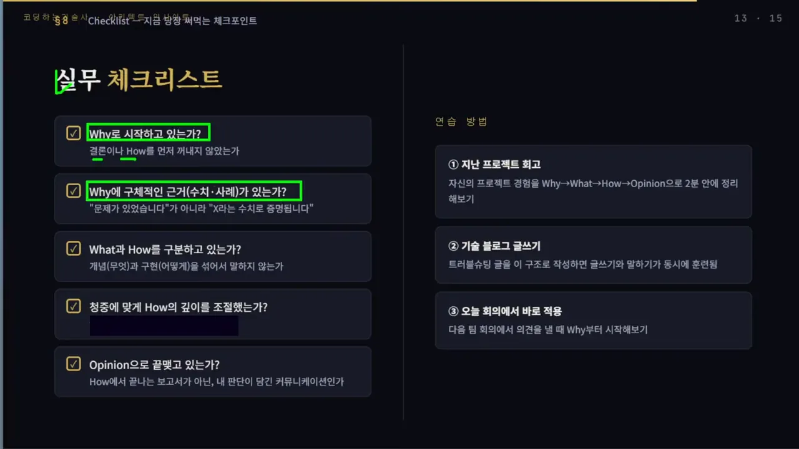
마지막 정리
영상은 다섯 줄로 끝맺어요. 카드 번호 순서대로 Why가 없으면 설득이 아니다, What과 How를 구분하라, Opinion이 없으면 보고서다, 청중에 따라 깊이를 조절하라, 이 구조는 모든 상황에서 통한다예요.
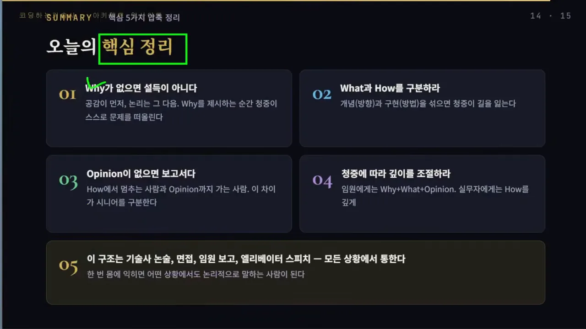